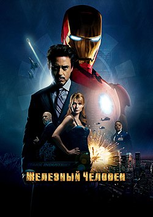

Железный человек
Добро пожаловать на фанатский сайт, посвященный культовой трилогии! Здесь вы найдете информацию о фильме, его создателях и интересные материалы.

О фильме
Год выпуска: 2008
Режиссер: Джон Фавро
Жанр: Фантастика, боевик, приключения
Сюжет: Миллиардер и гениальный изобретатель Тони Старк попадает в плен к террористам, где создает уникальную броню, чтобы выжить. Вернувшись домой, он совершенствует свою технологию и становится супергероем Железным человеком.
В главных ролях: Роберт Дауни-младший, Гвинет Пэлтроу, Терренс Ховард, Джефф Бриджес
Фильм положил начало кинематографической вселенной Marvel и стал одним из самых успешных проектов студии.